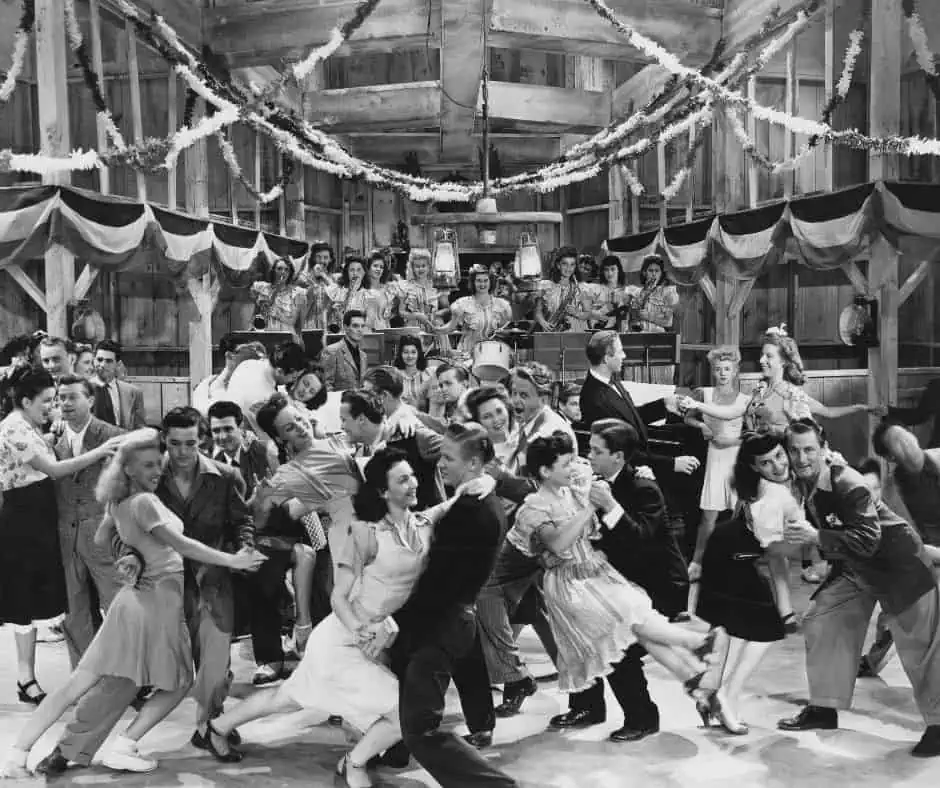
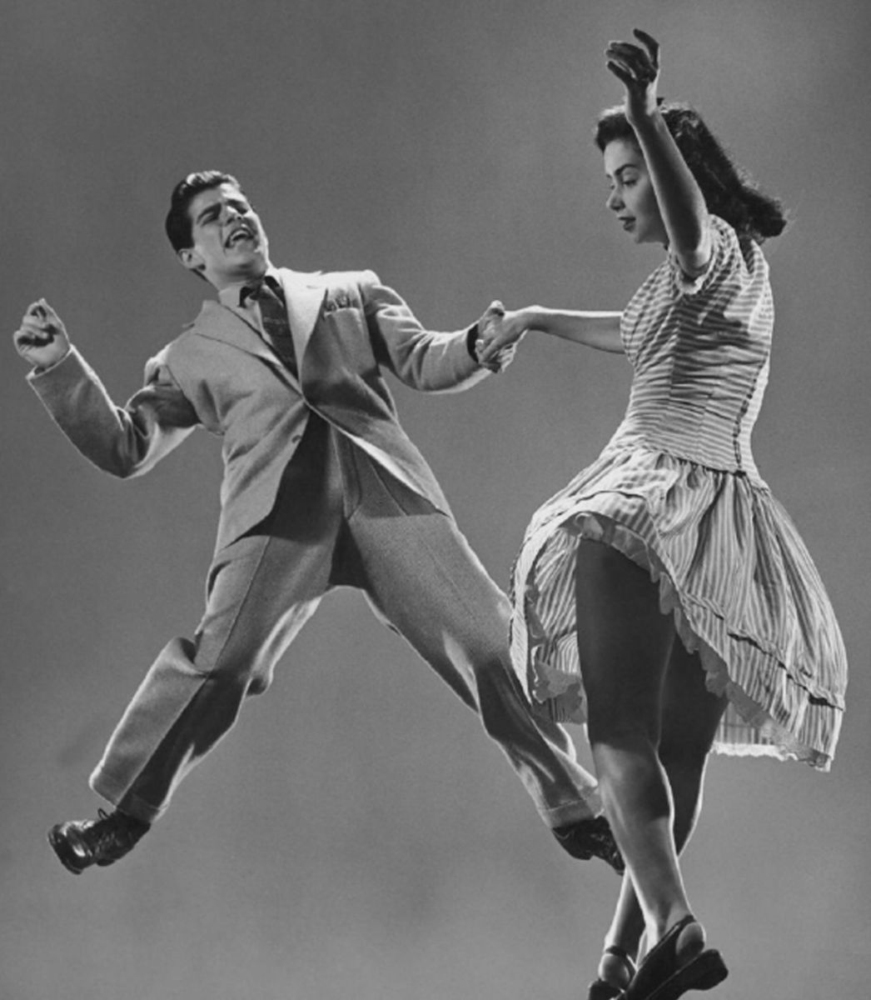

Swing Jazz
스윙 재즈는 빅밴드 장르의 하위장르로 1930년대와 1940년대에 큰 인기를 끌었던 장르이다. 일반적으로 4/4박자로
음악에서 8분 음표를 불규칙적으로 연주하는 것이다. 즉, 첫 번째 8분 음표는 일반적으로 두 번째 8분 음표보다 길고 약간 느슨하게
연주된다. 이것이 스윙음악의 본질인 '재즈리듬', 즉 '플로우'를 만들어낸다.
스윙 재즈는 20세기 초 빅밴드들 사이에서 인기를 끌었다. 듀크 엘링턴, 글랜 밀러, 베니 굿맨 등이 시대를 대표하는 음악가이다. 그들은 스윙을
사용하여 댄스 음악을 만들었고 사람들은 스윙에 맞춰 춤을 추고 싶어했다. 이후 스윙 원리는 비밥, 쿨 재즈, 하드 밥 등 다양한 재즈 장르에
적용됐다. 대공황, 제2차 세계대전 등 시대적 상황 속에서 살아가는 사람들에게 스윙음악은 기쁨과 위로의 원천이었다.
드러머는 "라이딩 심벌즈"를사용하여 올바른 리듬을 만들고 베이시스트는 "워킹 베이스"를 사용하여 음악에 깊이를 더한다. 트럼펫이나 색소폰과
같은 멜로디 악기도 음표가 중단 없이 연속적으로 흐르는 '레가토' 기법을 사용한다.
It don't mean a thing - Duke Ellington
In The Mood - Glenn Miller
If I had you - Benny Goodman

